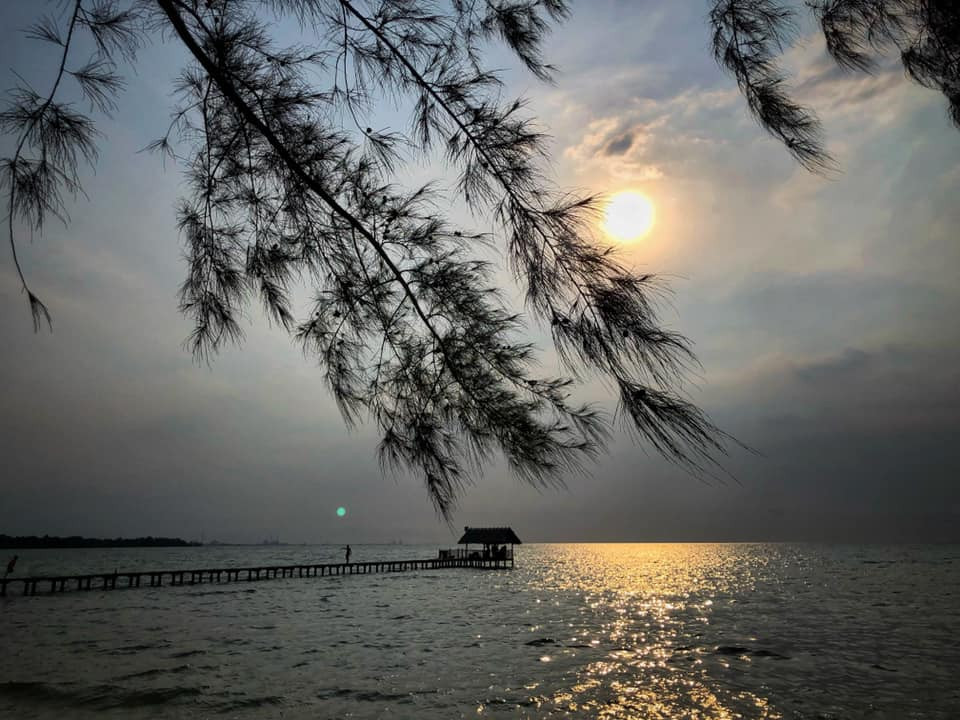
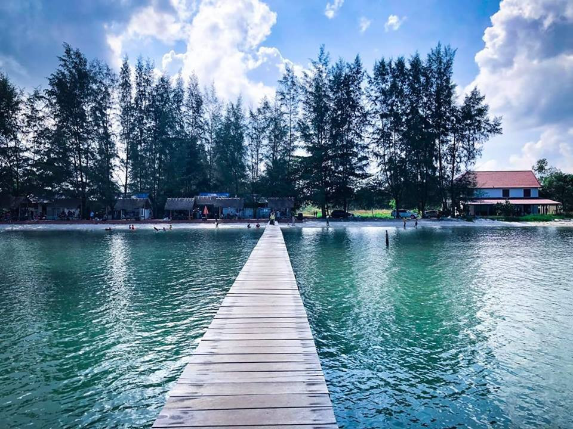
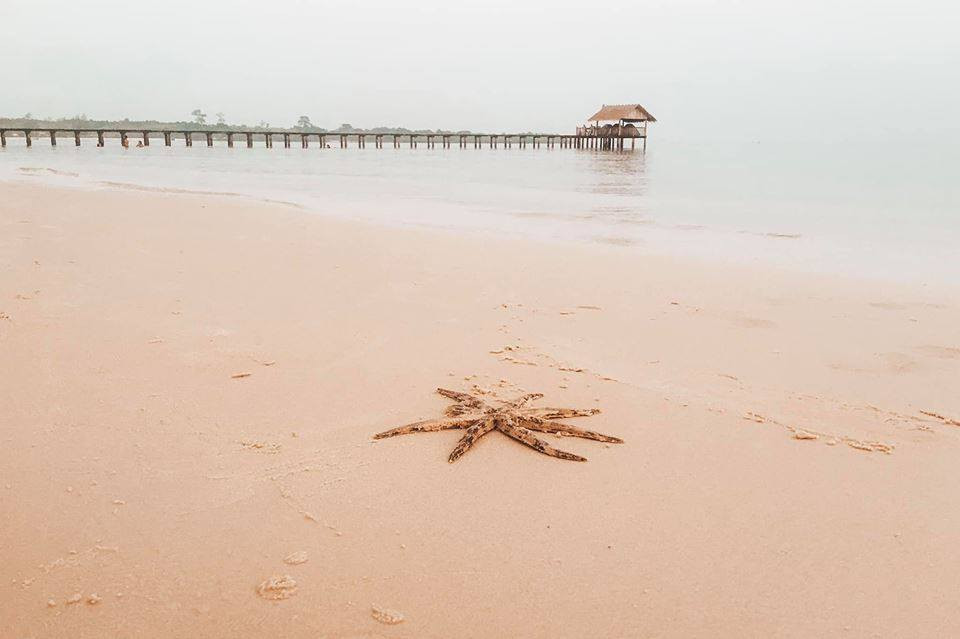

មកស្គាល់ «ឆ្នេរតាបារាំង» ទឹករាក់ ខ្សាច់សក្បុស ខ្យល់អាកាសបរិសុទ្ធ ទេសភាពស្អាតៗ
ឆ្នេរតាបារាំង តំបន់ទេសចរណ៍ក្នុងខេត្តព្រះសីហនុ ពិតជាមានទេសភាពស្អាតខ្លាំង មិនចាញ់កោះរ៉ុងប៉ុន្មាននោះទេ។ ឆ្នេរនេះមានខ្សាច់សក្បុស ទឹករាក់ស្រួលលេង និងមានខ្យល់បរិសុទ្ធធម្មជាតិត្រជាក់កាយតែម្ដង ស្ងប់ស្ងាត់ ជាមួយទេសភាពស្រស់ត្រកាល។
កុំថាឡើយទេសភាពទាក់ចិត្តមិនធម្មតារបស់ឆ្នេរតាបារាំង សូម្បីទេសភាពនៅតាមផ្លូវទៅតំបន់ទេសចរណ៍នេះ ក៏ស្អាតខ្លាំង មិនធម្មតាដែរ។ លោកអ្នកអាចចុះថតរូបលេង ជាមួយវាលស្មៅខ្ពស់ទាបយ៉ាងក្រាស់ដេលដាស មើលទៅដូចនៅបរទេសអ៊ីចឹង។ យ៉ាងណាៗ ខែឧសភានេះ សម្បូរថ្ងៃឈប់សម្រាកច្រើន កុំភ្លេចនាំគ្នាទៅលេងកម្សាន្តនៅតំបន់នេះទាំងអស់គ្នា។ លោកអ្នកអាចយកនំចំណីសម្រាប់ទៅញ៉ាំទីនោះបាន ព្រោះការលក់ដូរមិនទាន់សំបូរនោះឡើយ។

រមណីយដ្ឋានឆ្នេរតាបារាំងនេះ មានទីតាំងស្ថិតនៅក្នុង ភូមិឫទ្ធី 2 ឃុំកែវផុស ស្រុកស្ទឹងហាវខេត្តព្រះសីហនុ។ ក្នុងរយៈពេលប៉ុន្មានឆ្នាំចុងក្រោយនេះ គឺមានភ្ញៀវទេសចរជាតិនិងអន្តរជាតិ មកលេងកម្សាន្តយ៉ាងច្រើនកុះករ ជាពិសេសគឺនៅថ្ងៃសៅរ៍ ថ្ងៃអាទិត្យ និងថ្ងៃបុណ្យទាន។ សម្រាប់ភ្ញៀវទេសចរមកលេងនៅរមណីយដ្ឋានឆ្នេរតាបារាំងនេះ គឺមាន ២ ទីតាំង ទីតាំងទី១ គឺចូលតាមផ្លូវកែវផុសត្រង់ ឃុំតានៃ បំបែកពីផ្លូវជាតិលេខ៤ ដែលមានចម្ងាយជាង ១១គីឡូម៉ែត្រ និងផ្លូវទី២ ចូលតាមផ្លូវបំបែកសម្ដេចសង្ឃរាជទេពវង្សវាលរេញថ្មដា ដែលមានចម្ងាយជាង ១១គីឡូម៉ែត្រ ទើបទៅដល់ទីតាំងរមណីយដ្ឋាន។
រមណីយដ្ឋានឆ្នេរមួយនេះ មានទេសភាពស្រស់ស្អាត មានបរិស្ថានល្អ មាន សន្តិសុខល្អ សុវត្ថិភាព ឆ្នេរខ្សាច់សស្អាត ទឹកសមុទ្រខៀវស្រងាត់ និងមានទេសភាពព្រៃកោងកាងនៅតាមដងព្រែក ហើយភ្ញៀវអាចជិះទូកគយគន់មើលធនធានធម្មជាតិ ដោយភាពសប្បាយរីករាយជាលក្ខណៈ ជាពិសេសអាចរំសាយរាល់ទុក្ខកង្វល់ទាំងឡាយ។
សម្រាប់អ្នកចង់ទៅលេងនៅឆ្នេរតាបារាំង គួរតែសម្រេចចិត្តទៅ ព្រោះអីទេសភាពនៅទីនោះគឺស្អាតខ្លាំងមែនទែន ជាពិសេសទឹកសមុទ្រថ្លាឆ្វង់ ហើយពេលដែលយើងទៅដល់គឺធ្វើឲ្យយើងចង់ទៅលេងទឹកហ្នឹងតែម្ដង។ បើនិយាយពីកន្លែងស្នាក់នៅគេ ហៅថាបែបពិចនិច មានទាំងតង់ មានទាំងគ្រែ សម្រាប់គេង មានទាំងផ្ទះសម្រាប់គេង សម្រាប់អ្នកចង់ទៅលេងមិនពិបាកទេ នៅនោះមានតង់សំរាប់ជួល មានគ្រែសំរាប់ជួល យើងចង់បោះតង់នៅលើឆ្នេរខ្សាច់ក៏បានដែរ។
ពាក់ព័ន្ធទៅនឹងផ្លូវធ្វើដំណើរគឺអត់ពិបាកដូចកាលមុនទេកាលពីមុន ដែលយើងត្រូវធ្វើដំណើរឆ្លងទូកទើបអាចទៅដល់ឆ្នេរដ៏ស្រស់ស្អាតមួយនេះ ប៉ុន្តែបច្ចុប្បន្ន យើងមានផ្លូវកៅស៊ូ ហើយនៅពេលដែលទៅជិតដល់ឆ្នេរនោះ គឺយើងធ្វើដំណើរលើផ្លូវក្រួសក្រហមដែលមានស្ថានភាពមិនជាមានការលំបាកអ្វីទេ ហើយនៅពេលដែលយើងជិតទៅដល់គឺពេញចិត្តខ្លាំងមែនទែន នៅពេលជិតទៅដល់នោះ គឺមានព្រៃកោងកាង ដែលយើងអាចថតរូបបាន នឹងពេលយប់បើសិនជាយើងមានគ្នាច្រើន យើងអាចធ្វើការស្ទូចត្រី ឬក៏ទៅចាប់ក្ដាម តាមតំបន់ដែលនៅជាប់ឆ្នេរនោះបានទៀតផង៕
ចំនួនអ្នកទស្សនា